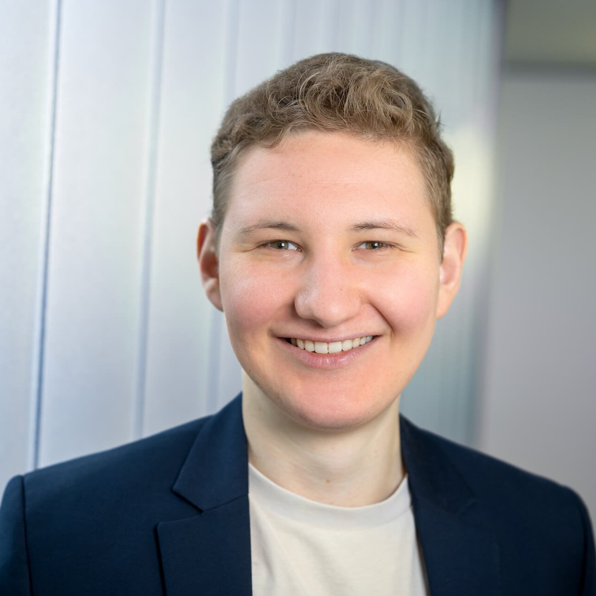

Andreas Burger

Bio
I am a Ph.D. researcher at UofT.
We conduct research where machine learning, robotics, and computer vision meet.
Previously I studied Physics with focus on quantum computing.
I completed my Bachelors and Masters in Vienna, Munich, and Singapore.
Publications
-
Digital Quantum Simulation of the Spin-Boson Model under Markovian Open-System Dynamics
Andreas Burger, Dario Poletti, Kwek Leong Chuan
Entropy, 2022
[Paper]
Education
-
National University of Singapore
Masters thesis, Jan 2022 - Dez 2022
-
University of Munich
Masters Physics, Nov 2020 - Dez 2022
-
University of Technology Vienna
Bachelors Physics, Oct 2017 - Jul 2020
Experience
Find the full list on
LinkedIn
-
Quantum Algorithm Engineer
IQM Quantum Computers,
May 2023 - Aug 2023
-
Quantum Algorithm Engineer
IQM Quantum Computers,
May 2023 - Aug 2023
-
Product Ownder
applied by zeb,
Feb 2023 - Apr 2023
-
Consultant
EFS Consulting,
Oct 2021 - Dez 2021
-
Head of Sponsorship
(unpaid)
TU Wien Racing,
Oct 2018 - Sep 2020
-
Blood Donation Service
Red Cross,
Jan 2017 - Sep 2017
Projects
-
Simulating a Spin-Boson Model in an Markovian Environment on Quantum Computers.
Rebuild from the code for my masters thesis [Github]
-
Understanding NN by impleting them from scratch [Github]
Teaching